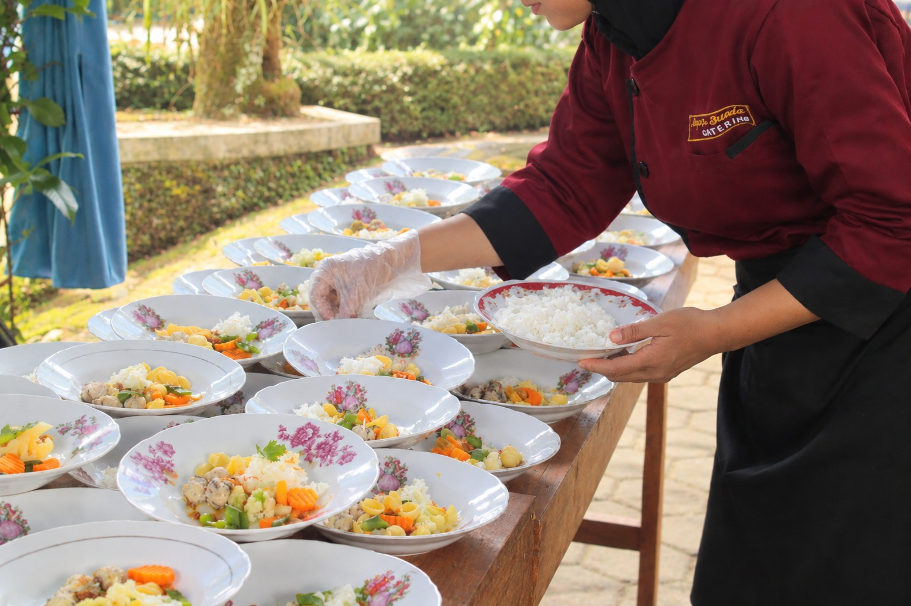
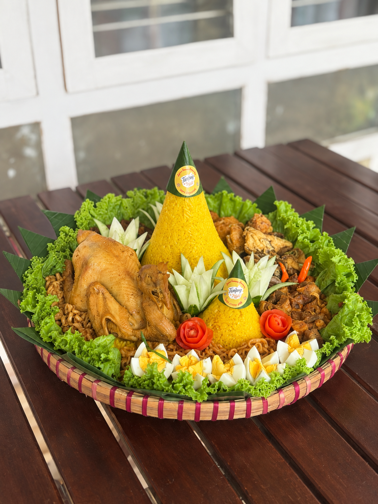

Cerita DBC

DI BALIK FILM GADIS KRETEK
Di balik sebuah film, ada banyak orang yang bekerja bersama untuk menghadirkan setiap adegan. Dapur Bunda berkesempatan menjadi bagian kecil dari proses tersebut dengan menyiapkan hidangan untuk para pemain dan kru selama syuting di Magelang

PIRING TERBANG KHAS SOLO
Pada pernikahan Tika dan Krisna di Desa Bigaran, Borobudur, Dapur Bunda Catering dipercaya untuk menyiapkan hidangan para tamu undangan dengan konsep "Piring Terbang Khas Solo" yang disajikan secara bertahap. Seluruh rangkaian jamuan berjalan dengan lancar, mulai dari hidangan pembuka hingga hidangan penutup. Para tamu dapat menikmati sajian dengan nyaman, dan kami senang dapat turut mendukung kelancaran acara Tika dan Krisna di hari istimewa mereka.

TUMPENG SARIMBIT UNTUK ISTRI TERCINTA
Ada pesanan yang datang dengan cerita sederhana, tetapi manis. Sepasang tumpeng sarimbit lengkap dengan ingkung disiapkan untuk sebuah kejutan ulang tahun bagi sang istri tercinta. Tumpeng yang dipesan khusus untuk melengkapi momen istimewa tersebut akhirnya menjadi bagian dari surprise kecil untuk orang tersayang.

SAHUR & BERBUKA UNTUK TIM RI 2
Bulan Ramadan membawa Dapur Bunda Catering ke Borobudur untuk menyiapkan hidangan sahur dan berbuka bagi tim yang mendampingi kegiatan Wakil Presiden Ma’ruf Amin di Magelang saat itu. Di tengah rangkaian kegiatan yang berlangsung selama bulan puasa, hidangan sahur dan berbuka disiapkan untuk para ajudan, panitia, dan seluruh tim yang bertugas.
DI BALIK PERSIAPAN PESTA PERNIKAHAN
Sebelum pesta dimulai, ada banyak hal yang harus dipersiapkan. Dapur Bunda Catering dipercaya menyiapkan catering untuk keluarga, kru, wedding organizer, dan para vendor yang bekerja di balik persiapan sebuah pesta pernikahan. Nasi Kotak Borobudur disiapkan untuk menemani mereka selama proses persiapan, agar setiap orang yang terlibat tetap bisa bekerja dengan nyaman hingga acara siap dimulai.
CATERING HARIAN TENAGA KESEHATAN
Di tengah kesibukan, makan siang menjadi jeda untuk mengisi tenaga sebelum kembali melanjutkan aktivitas. Dapur Bunda Catering dipercaya untuk menyediakan makan siang sekaligus snack untuk menemani keseharian dokter di Balkesmas Kota Magelang